It's almost impossible to do graphics programming without using vectors. Almost all math concerning 3d coding uses vectors. If you hate vectors, read on and you'll probably love them more than your girlfriend after you've finished reading this article. ;*)
First off, let me define 2 quantities: The scalar and vector quantities. Okay, scalar quantities are just values. One example of it is Temperature. You say, "It's 40 degrees Celsius here", and that's it. No sense of direction. But to define a vector you need a direction or sense. Like when the pilot say's, "We are 40 kilometers north of Midway". So a scalar quantity is just a value while a vector is a value + direction.
Look at the figure below: The arrow (ray) represents a vector. The "head" is its "sense" (direction is not applicable here) and the "tail" is its starting point. The distance from head to tail is called its "magnitude".
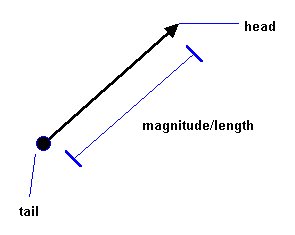
In this vector there are 2 components, the X and Y component. X is the horizontal and Y is the vertical component. Remember that "ALL VECTOR OPERATIONS ARE DONE WITH ITS COMPONENTS."
I like to setup my vectors in this TYPE:
The difference between the "sense" and "direction" is that direction is the line the vector is located while sense can go either way on that line.
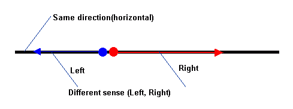
*|v| means that |v| is the magnitude of v.
*Orthogonal vectors are vectors perpendicular to each other. It's sticks up 90 degrees.
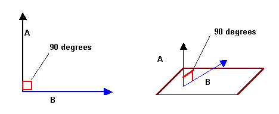
To get a vector between 2 points:
2d:
3d:
QB code:
where: (x2-x1) is the horizontal component and so on.
Vectors are not limited to the cartesian coordinate system. In polar form:
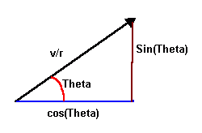
Suppose a vector v has a magnitude 5 and direction given by Theta = 30 degrees. Where theta is the angle the vector makes with the positive x-axis. How do we resolve this vectors' components?
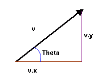
Remember the Polar to Cartesian conversion?
Let vx = horizontal component
Let vy = horizontal component
Let Theta = Be the angle
So...
What I've been showing you is a 2d vector. Making a 3d vector is just adding another component, the Z component.
Purpose:
Equation:
QB code:
Purpose:
Equation:
QB code:
Purpose:
Equation:
QB code:
Purpose:
Equation:
QB code:
Fun fact:
Purpose:
Equation:
QB code:
Fun facts:
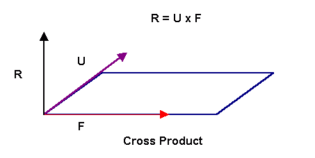
Purpose:
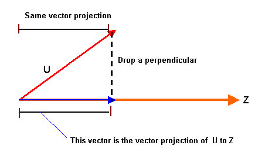
Equation:
QB code:
Let N = vector projection of U to Z. The vector parallel to Z.
Purpose:
Equations:
QB code:
Now that Most of the Math is out of the way....
I like to make use of types with my 3d engines. For Polygons:
P1 is the first vertex, p2 second and p3 third. Let's say you have a nice rotating cube composed of points, looks spiffy but you want it to be composed of polygons (Triangles) in this case). If we have a cube with vertices:
What we need are connection points that define a face. The one below is a Quadrilateral face (4 points)
Face1 would have vertex 1, 2, and 3 as its connection vertices.
Now since we want triangles instead of quads, we divide each quad into 2 triangles, which would make 12 faces. It's also imperative to arrange your points in counter-clockwise or clockwise order so that backface culling would work. In this case I'm using counter-clockwise.
The following code divide the quads into 2 triangles with vertices arranged in counter-clockise order. Tri(j).idx will be used for sorting.
QB code:
To render the cube without backface culling, here's the pseudocode:
Backface culling is also called "hidden face removal". In essense, it's a way to speed up your routines by NOT showing a polygon if it's not facing towards you. But how do we know what face of the polygon is the "right" face? Let's take a CD as an example, there are 2 sides to a particular CD. One side that the data is to be written and the other side where the label is printed. What if we decide that the Label-side should be the right side? How do we do it? Well it turns out that the answer is our well loved NORMAL. :*) But for that to work, we should *sequentially* arrange our vertices in counter or clockwise order.
If you arranged your polys' vertices in counter-clockwise order as most 3d modelers do, you just get the projected z-normal of the poly and check if its greater than(>)0. If it is, then draw triangle. Of course if you arranged the vertices in clockwise order, then the poly is facing us when the Z-normal is <0.
Counter-Clockwise arrangement of vertices:
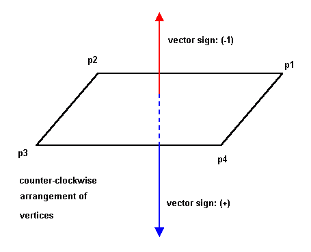
Clockwise Arrangement of vertices:
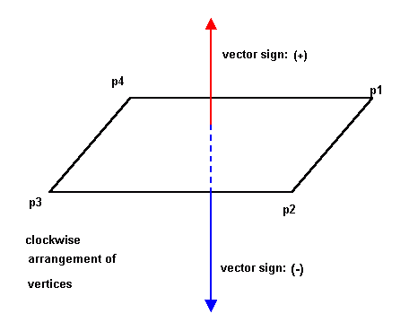
Since we only need the z component of the normal to the poly, we could even use the "projected" coords (2d) to get the z component!
QB code:
Here's the example file:
3dwire.bas
There are numerous sorting techniques that I use in my 3d renders here are the most common:
I won't go about explaining how the sorting algorithms work. I'm here to discuss how to implement it in your engine. It may not be apparent to you (since you are rotating a simple cube) but you need to sort your polys to make your renders look right. The idea is to draw the farthest polys first and the nearest last. Before we could go about sorting our polys we need a new element in our polytype.
*Idx would be the index we use to sort the polys. We sort via IDX, not by subscript.
*Zcenter is the theoretical center of the polygon. It's a 3d coord (x,y,z)
To get the center of any polygon or polyhedra(model),you add all the 3 coordinates and divide it by the number of vertices (In this case 3).
Since we only want to get the z center:
Optimization trick:
We don't really need to find the *real* Zcenter since all the z values that were added are going to be still sorted right. Which means... No divide!!!
Now you sort the polys like this:
To Draw the model, you use the index(Poly.idx)
Here's a working example:
sorting.bas
These 2 systems are extentions of the polar coordinate system. Where polar is 2d these 2 are 3d. :*)
The cylindrical coodinate system is useful if you want to generate models mathematically. Some examples are Helixis, Cylinders (of course), tunnels or any tube-like model. This system works much like 2d, but with an added z component that doesn't need and angle. Here's the equations to convert cylindrical to rectangular coordinate system.
Here's the Cylindrical to rectangular coordinate conversion equations. Almost like 2d. Of course this cylinder will coil on the z axis. To test yourself, why dont you change the equations to coil it on the y axis?
To generate a cylinder:
Here's a 9 liner I made using that equation.
9liner.bas
This is another useful system. It can be used for Torus and Sphere generation. Here's the conversion:
Where: Theta = Azimuth; Phi = Elevation
To generate a sphere:
Here's a little particle engine using the spherical coordinate system.
fountain.bas
Here's an example file to generate models using those equations:
gen3d.bas
Tired of just wireframe and pixels? After making a wireframe demo, you'd want your objects to be solid. The first type of fill that I'll be introducing is a flat triangle filler. What?! But I could use PAINT to do that! Well, you still have to understand how the flat filler works because the gouraud and texture filler will be based on it. ;*)
Now how do we make a flat filler? Let me introduce you first to the idea of LINEAR INTERPOLATION. How does interpolation work?
Let's say you want to make dot on the screen at location (x1,y1) to (x2,y2) in 10 steps?
So....
That's all to there is to interpolation. :*)
Now that we have an idea of what linear interpolation is we could make a flat triangle filler.
Flat Filled
Flat Bottom
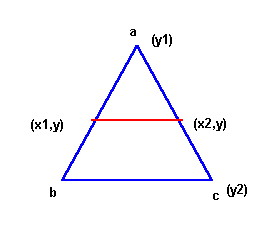
Flat Top
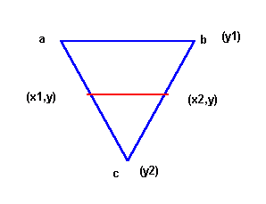
Generic Triangle
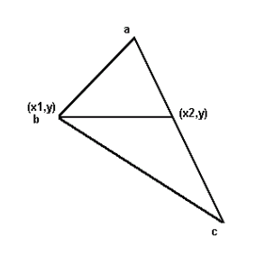
In both the Flat Top and Flat bottom cases, it's easy to do both triangles as we only need to interpolate A to B and A to C in Y steps. We draw a horizontal line in between (x1,y) and (x2,y).
The problem lies when we want to draw a generic triangle since we don't know if it's a flat top or flat bottom. But it turns out that there is an all too easy way to get around with this. Analyzing the generic triangle, we could just divide the triangle into 2 triangles. One Flat Bottom and One Flat Top!
We draw it with 2 loops. The first loop is to draw the Flat Bottom and the second loop is for the Flat Top.
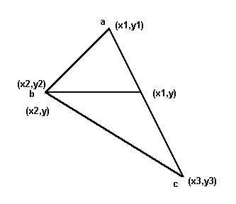
Pseudo Code:
TOP PART ONLY!!!! (FLAT BOTTOM)
Interpolate a.x and draw each scanline from a.x to b.x in (b.y-a.y) steps.
Interpolate a.x and draw each scanline from a.x to c.x in (c.y-a.y) steps.
Draw each scanline (Horizontal line) from a.y to b.y incrementing y with one in each step, interpolating LeftX with Xstep1! and RightX with Xstep3!. You've just finished drawing the TOP part of the triangle!!!
Do the same with the bottom-half interpolating from b.x to c.x in b.y steps.
Pseudo Code:
Sort Vertices
Interpolate A to B
Interpolate B to C
Interpolate A to C
Draw Top Part
Draw Lower Part
Here's an example file:
flattri.bas
Gouraud Filled
There is not that much difference between the flat triangle and the gouraud triangle. In the calling sub, instead of just the 3 coodinates, there are 3 paramenters more. Namely: c1,c2,c3. They are the colors we could want to interpolate between vertices. And since you know how to interpolate already, it would not be a problem. :*)
First we need a horizontal line routine that draws with interpolated colors. Here's the code. It's self explanatory.
*dc! is the ColorStep(Like the Xsteps)
QB code:
Now that we have a horizontal gouraud line, we will modify some code into our flat filler to make it a gouraud filler. I won't give you the whole code, but some important snippets.
In the sorting stuff: (You have to do this to all the IF's.
Interpolate A to B; c1 to c2. do this to all vertices.
Draw Top Part
It's that easy! You have to interpolate just 3 more values! Here's the complete example file:
gourtri.bas
Again, there is not much difference between the previous 2 triangle routines from this. Affine texturemapping also involves the same algo as that of the flat filler. That is, Linear interpolation. That's probably why it doesn't look good. :*( But it's fast. :*). If in the gouraud filler you need to interpolate between 3 colors, you need to interpolate between 3 U and 3 V texture coordinates in the affine mapper. That's 6 values in all. In fact, it's almost the same as gouraud filler!
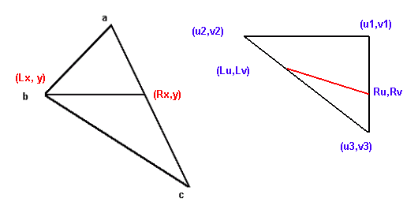
Now we have to modify our Gouraud Horizontal line routine to a textured line routine.
*This assumes that the texture size is square and a power of 2. Ie. 4*4, 16*16, 128*128,etc. And is used to prevent from reading pixels outside the texture.
*The texture mapper assumes a QB GET/PUT compatible image. Array(1) = width*8; Array(2) = Height; Array(3) = 2 pixels.
*HlineT also assumes that a DEF SEG = Varseg(Array(0)) has been issued prior to the call. TOFF is the Offset of the image in multiple image arrays. ie: TOFF = VARPTR(Array(0))
*TsizeMinus1 is Texturesize -1.
QB code:
Now we have to modify the rasterrizer to support U and V coords. All we have to do is interpolate between all the coords and we're good to go.
In the sorting stuff: (You have to do this to all the IF's.)
Interpolate A to B; u1 to u2; v1 to v2. Do this to all vertices.
Draw Top Part
Here's the example demo for you to learn from. Be sure to check the algo as it uses fixpoint math to speed things up
quite a bit. :*)
texttri.bas
So you want your cube filled and lightsourced, but don't know how to? The answer is Lambert Shading. And what does Lambert shading use? The NORMAL. Yes, it's the cross-product thingy I was writing about. How do we use the normal you say. First, you have a filled cube composed of triangles (Polys), now we define a vector orthogonal to that plane (Yep, the Normal) sticking out.
How do we calculate normals? Easy, use the cross product!
Pseudo Code:
QB code:
Q: "You expect me to do this is real-time?!!!" "That square-root alone would make my renders slow as hell!!"
A: No. You only need to do this when setting up your renders. ie. Only do this once, and at the top of your proggie.
Now that we have our normal, we define a light source. Your light source is also a vector. Be sure that both vectors are normalized.
ie.
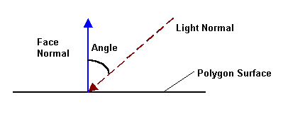
The angle in the pic is the incident angle between the light and the plane normal. The angle is inversely proportional to the intensity of light. So the lesser the angle, the more intense the light. But how do we get the intensity? Fortunately, there is an easy way to calculate the light. All we have to do is get the Dot product between these vectors!!! Since the dot returns a scalar value ,Cosine(angle), we can get the brightness factor by just multiplying the Dot product by the color range!!! In screen 13: Dot*255.
Here's an example file in action:
lambert.bas
After the lambert shading, we progress into gouraud shading.
Q: But how do we find a normal to a point?
A: You can't. There is no normal to a point. The cross-product is exclusive to planes(3d) so you just can't.
You don't have to worry though, as there are ways around this problem.
What we need to do is to find adjacent faces that the vertex is located and average their face normals. It's an approximation but it works!
Let: V()= Face normal; V2() vertexnormal
Now that you have calculated the vertex normals, you only have to pass the rotated vertex normals into our gouraud filler!!! ie. Get the dot product between the rotated vertex normals and multiply it with the color range. The product is your color coordinates.
Here's and example file:
gouraud.bas
Phong shading is a shading technique which utilizes diffuse, ambient and specular lighting. The only way to do Real phong shading is on a per-pixel basis. Here's the equation:
Where:
Ambient = This is the light intensity that the objects reflect upon the environment. It reaches even in shadows.
Diffuse = Light that scatters in all direction
Specular = Light intensity that is dependent on the angle between your eye vector and the reflection vector. As the angle between them increases, the less intense it is.
L.N = The dot product of the Light(L) vector and the Surface Normal(N)
R.V = The dot product of the Reflection(R) and the View(V) vector.
Ns = is the specular intensity parameter, the greater the value, the more intense the specular light is.
*L.N could be substututed to R.V which makes our equation:
Technically, this should be done for every pixel of the polygon. But since we are making real-time engines and using QB, this is almost an impossibilty. :*(
Fortunately, there are some ways around this. Not as good looking, but works nonetheless. One way is to make a phong texture and use environment mapping to simulate light. Another way is to modify your palette and use gouraud filler to do the job. How do we do it then? Simple! Apply the equation to the RGB values of your palette!!!
First we need to calculate the angles for every, color index in our pal. We do this by interpolating our Normals' angle (90 degrees) and Light vectors' angle with the color range.
Pseudo Code:
* This idea came from a Cosmox 3d demo by Bobby 3999. Thanks a bunch!
Here's an example file:
phong.bas
Texture mapping is a type of fill that uses a texture (image) to fill a polygon. Unlike our previous fills, this one "plasters" an image (the texture) on your cube. I'll start by explaining what are those U and V coordinates in the Affine mapper part of the article. The U and V coordinates are the Horizontal and vertical coordinates of the bitmap (our texture). How do we calculate those coordinates? Fortunately, most 3d modelelers already do this for us automatically. :*).
However, if you like to make your models the math way, that is generating them mathematically, you have to calculate them by yourself. What I do is divide the quad into two triangles and blast the texture coordinates on loadup. Lookat the diagram to see what I mean.
*Textsize is the width or height of the bitmap
After loading the textures, you just call the TextureTri sub passing the right parameters and it would texture your model for you. It's a good idea to make a 3d map editor that let's you pass texture coordinates, instead of calculating it on loadup. Here's a code snippet to draw a textured poly.
*Tseg% and Toff% are the Segment and Offset of the Bitmap.
Here's an example file:
texture.bas
Environment mapping (also called Reflection Mapping) is a way to display a model as if it's reflecting a surface in front of it. Your model looks like a warped-up mirror! It looks so cool, I jumped off my chair when I first made one. :*) We texture our model using the texture mapper passing a vertex-normal modified texture coordinate. What does it mean? It means we calculate our texture coordinate using our vertex normals!
Here's the formula:
Where:
Wid = Width of the bitmap
Hei = Height of the bitmap
Now, assuming your texture has the same width and height:
After setting up the vertex normals and the texture coordinates, inside your rasterizing loop:
That's it! Your own environment mapped rotating object. ;*)
Here's a demo:
envmap.bas
Another one that simulates textures with phong shading using a phongmapped texture.
phong2.bas
Our previous shading techniques, Lambert, gouraud, and phong, looks good but you are limited to a single gradient. Not a good fact if you want to use colors. But using colors in screen 13 limits you to flat shading. I bet you would want a gouraud or phong shaded colored polygons right? Well, lo and behold! There is a little way around this problem. :*)
We use a subdivided gradient palette! A subdivided gradient palette divides your whole palette into gradients of colors limited to its subdivision. Here's a little palette I made using data statements and the gradcolor sub.
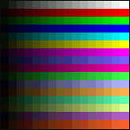
If you look closely, each line starts with a dark color and progresses to an intense color. And if you understood how our fillers work, you'll get the idea of modifying the fillers to work with this pal. Okay, since I'm feeling good today, I'll just give it to you. After you calculated the Dot-product between the light and poly normals:
*This assumes a 16 color gradient palette. You could make it 32 or 64 if you want. Of course if you make it 32, you should multiply by 32 instead of 16. :*)
QB code:
Here's an example:
3dcolors.bas
A lot of people have asked me about the algo behind my translucent teapot in Mono and Disco. It's not that hard once you know how to make a translucent pixel. This is not really TRUE translucency, It's a gradient-based blending algorithm. You make a 16 color gradient palette and apply it to the color range (Same grad above. :*) ).
Pseudo Code:
What this does for every pixel is to average the polygons color with the color behind it(the screen or buffer) and add it to the basecolor. The basecolor is the starting color for each gradient. Ie. (0-15): 0 is the base color; (16 to 31): 16 is the base color. Hence the AND 15. Of course, you can make it a 32 color gradient and AND it by 31. :*)
Here's a little demo of Box translucency I made for my Bro. Hex. ;*)
transhex.bas
Here's the 3d translucency demo:
transluc.bas
To make good models, use a 3d modeler and import it as an OBJ file as it's easy to read 3d Obj files. Lightwave3d and Milkshape3d can import their models in the OBJ format. In fact I made a loader myself. ;*) Note that some models does not have textures, notably, Ship.l3d, fighter.l3d, etc. The only ones with saved textures are Cubetext, Maze2, TriforcT, and Pacmaze2.
Zipped with OBJs:
loadobj.zip
Bas File:
loadl3d.bas
This article is just a stepping stone for you into bigger things like Matrices, viewing systems and object handling. I hope you learned something from this article as this took me a while to write. Making the example files felt great though. :*) Any questions, errors in this doc, etc., you can post questions at http://forum.qbasicnews.com/. Chances are, I would see it there.
Next article, I will discuss Matrices and how to use them effectively on your 3d engine. I would also discuss polygon clipping and probably, if space permits, 3d viewing systems. So bye for now, Relsoft, signing off...
http://rel.betterwebber.com/
vic_viperph@yahoo.com
Credits:
God for making me a little healthier. ;*)
Dr. Davidstien for all the 3d OBJs.
Plasma for SetVideoSeg
Biskbart for the Torus
Bobby 3999 for the Phong sub
CGI Joe for the original polyfillers
Blitz for the things he taught me.
Toshi for the occasional help
| Author: | Rel (Richard Eric M. Lope) |
| Email: | vic_viperph@yahoo.com |
| Website: | http://rel.betterwebber.com/ |
| Released: | 2004 |